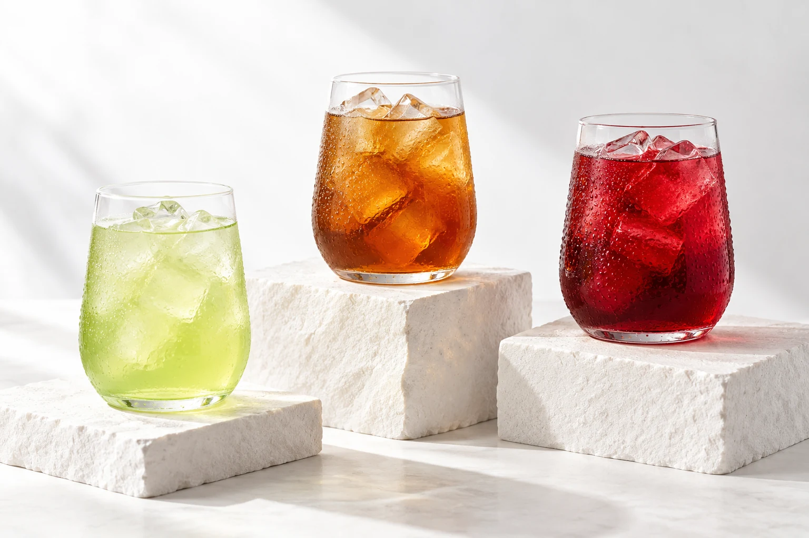

01 / JAMAICA
La vista pidió limón.
El sabor tenía otros planes.
Jamaica.
La que parece de limón es de jamaica, pero sabe a tamarindo.
- Parece de
- Limón
- Sabe a
- Tamarindo
Una sorpresa desde el primer sorbo.
TRES BEBIDAS. UNA PERSONALIDAD INESPERADA.
Parece una cosa. Sabe a otra.
Y se llama como le da la gana.
Jamaica, limón y tamarindo: tres refrescos que convierten cada sorbo en una pequeña sorpresa.

01 / NUESTRA COLECCIÓN
El nombre, la apariencia y el sabor tienen su propia versión de la historia. Tú decides con cuál te quedas.
La vista pidió limón.
El sabor tenía otros planes.
La que parece de limón es de jamaica, pero sabe a tamarindo.
Una sorpresa desde el primer sorbo.
Tus ojos dicen tamarindo.
Tu paladar pide otra opinión.
La que parece de tamarindo es de limón, pero sabe a jamaica.
Para quien disfruta cambiar de idea.
El nombre se queda.
El sabor hace lo que quiere.
La que parece de jamaica es de tamarindo, pero sabe a limón.
La curiosidad también se bebe.
Un símbolo.
Tres formas de ser freskos.
AWAS FRESKAS
Nos gusta la freskura. Y también darle un giro a lo que esperabas.
AWAS FRESKAS es una línea conceptual de refrescos de jamaica, limón y tamarindo con una identidad compartida y descripciones que juegan con el nombre, la apariencia y el sabor.
LOS COLORES DE LA MARCA
Una paleta que reúne la energía de la jamaica, la vitalidad del limón y la calidez del tamarindo.
Un rojo expresivo que despierta la curiosidad.
#B90032Un verde vivo que transmite vitalidad.
#78A900Un marrón profundo que aporta cercanía y equilibrio.
#592600Estas asociaciones orientan la identidad visual y pueden variar según la cultura y el contexto. El blanco ofrece espacio y claridad para leer.
03 / LABORATORIO WEB
Descubre la tecnología detrás de una página, experimenta con ejemplos y comprueba lo que aprendiste.
Variables, funciones y eventos que dan vida a una página.
Explorar JavaScript 02 / INTERACCIÓNCompara la sintaxis y prueba efectos con la librería.
Explorar jQuery 03 / DATOSEntiende cómo los datos se convierten en texto y viajan.
Explorar JSON 04 / PUBLICACIÓNConoce el camino que lleva un proyecto a internet.
Explorar publicaciónTU TURNO
10 preguntas. Explicaciones al terminar.
Todas las oportunidades que necesites.